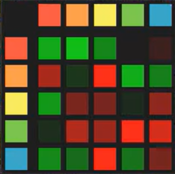

Particle Life is a simulation where thousands of coloured particles push and pull on each other using a handful of simple rules. Nothing in the rules describes a cell, a membrane or a swarm, but those shapes appear anyway, and watching them form and fall apart is strangely addictive.
After playing around with DicSo92's version, I wanted to build my own and change how the particles decide who they like. Particle Evolution replaces the usual attraction table with a small genome for each species, and runs the whole thing on the GPU so it can handle tens of thousands of particles.
I built it over about 21 hours for Hack Club's Stardance, and along the way I learned a lot about how GPUs work. It didn't end up quite where I planned, but I'm really happy with the patterns it makes.
The first version was written in Python with Pygame and ran entirely on the CPU, with every particle checking every other particle each frame. A spatial grid helped with speed, but the physics was erratic until I tracked down a few bugs, including a partly inverted repulsion force and friction being applied in the wrong order.
The CPU version topped out at about 1,500 particles,
so I rewrote most of the backend using
Taichi, which pushed that past
20,000. The equations stayed mostly the same, but the
particles became big lists of numbers instead of
Python objects, and getting used to Taichi's
fields and vectors took a
while to click.
The original goal was for the particles to actually evolve. My first attempt let nearby particles swap bits of DNA, but it mostly turned into chaos. After a lot of trial and error, I kept the genome system, gave each species a fixed genome, and focused on tools for tuning them by hand. I also moved the rendering onto the GPU with Taichi's UI library, so the particle data never has to leave the GPU.
In traditional Particle Life, particles are split into colours, and a square matrix stores how strongly each colour is attracted to or repelled by every other colour. Each cell in the matrix is its own independent number, so there is no relationship between how red feels about blue and how red feels about green.

In my version, each species instead carries a genome made of 3 traits and 3 receptors. Traits describe what a particle is, and receptors describe what it reacts to. Each receptor reads the matching trait on a neighbouring particle.
| genome | ||
|---|---|---|
| Gene | Range | Purpose |
| Traits 1 to 3 | 0 to 1 | What other particles can sense about this one. |
| Receptors 1 to 3 | -1 to 1 | How this particle responds to the matching trait on its neighbours. Positive values attract, negative values repel. |
To work out how particle B feels about
particle A, the simulation multiplies each of
B's receptors with the matching trait on
A and adds them together, then squashes the
result with tanh so it stays between -1
and 1. If Trait 1 on A is 1 and Receptor 1 on
B is also 1, B is pulled towards
A. Flip that receptor to -1, and B
is pushed away instead.
Because every relationship comes from the same six numbers, changing one gene ripples through the whole system. That makes the interactions feel connected rather than random, and means that if I come back to evolution, there's something meaningful for it to work on.
Every tick, each particle adds up a force from every other particle within its interaction radius. The force depends on how far away the other particle is:
Inside the repulsion radius, every particle pushes every other particle away, no matter what their genomes say. The push gets stronger the closer they are, which stops particles from collapsing into a single point.
Between the repulsion radius and the interaction radius, the genome takes over. The affinity from the genome is scaled by a triangle-shaped curve, so the force is strongest halfway through that range and fades to zero at both edges.
Velocities are slowed by friction each step, and the world wraps around at the edges, so a particle leaving the right side reappears on the left. Distances are measured across the wrap too, which means there are no walls for structures to get stuck against.
Taichi compiles the physics functions into GPU kernels. Positions, velocities and genomes all live in GPU memory, and the particles are drawn straight from there, so nothing needs to be copied back to the CPU each frame.
Every particle checks every other particle, so the work grows with the square of the population. On my RX 6800 it comfortably runs over 50,000 particles, whereas my 7600X CPU tops out at around 8,000.
Packaging it was its own challenge. Taichi reads the source code of each kernel when it compiles, and that source isn't available inside a PyInstaller build. To get around it, the build bundles a plain copy of the physics file and loads it into Python's line cache before Taichi goes looking for it.
Pressing SPACE toggles an overlay that exposes almost everything. The options panel controls time scale, interaction radius, repulsion radius, friction, population (up to 100,000), species count (up to 10), particle size and background colour.
Each species gets its own panel with sliders for all six genes, so you can nudge a single receptor and watch the structures reorganise in real time. The controls panel can randomise positions, whole genomes, or just the traits or receptors, and switch the colouring between showing traits and receptors.
Configurations can be saved and loaded as JSON files,
storing the physics settings, visuals and every
species' genome. The repo includes an example called
moon.json to get started with.